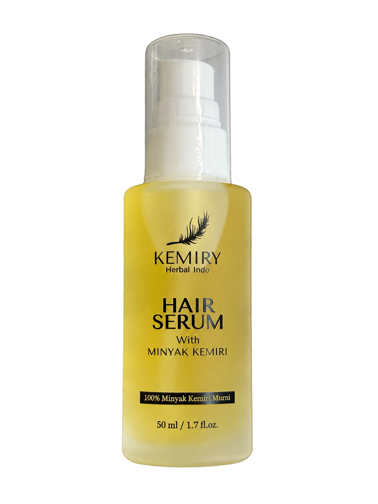
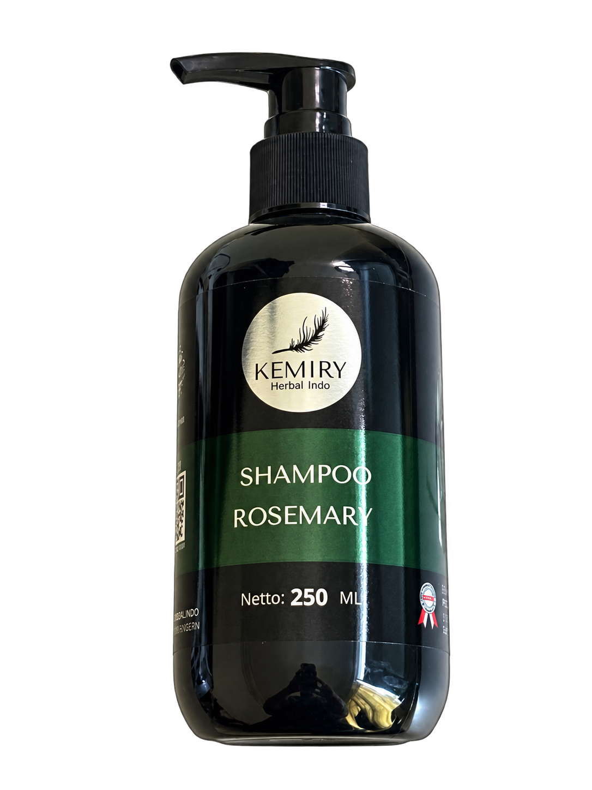
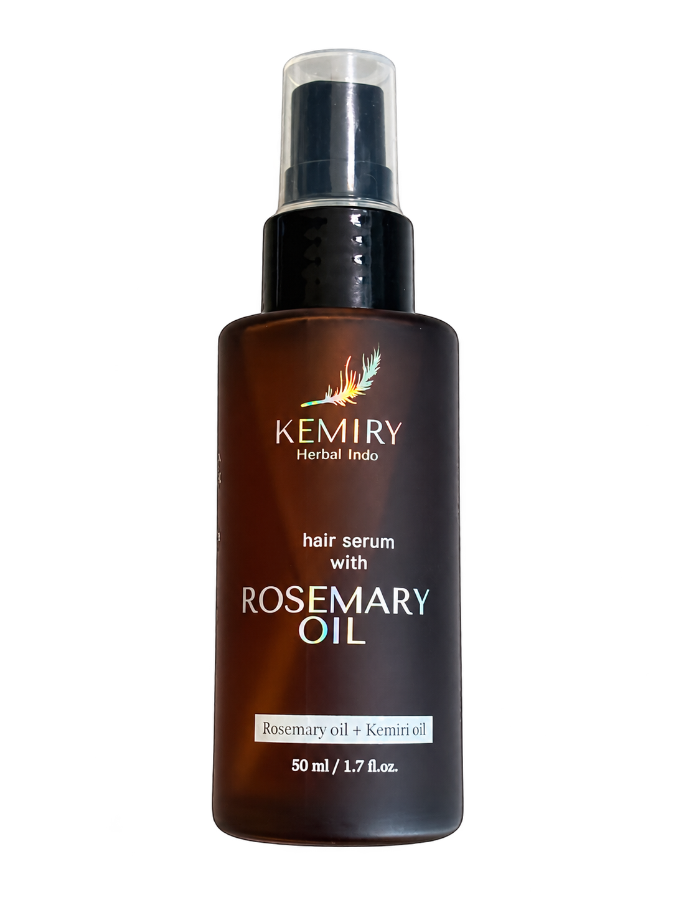
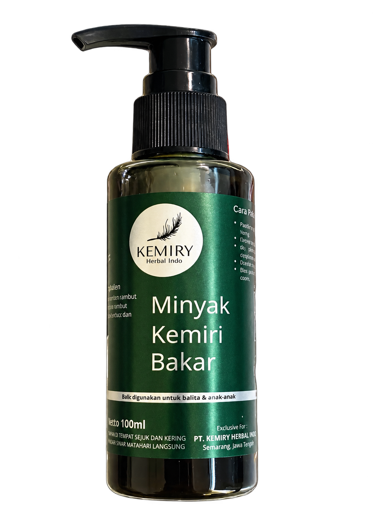
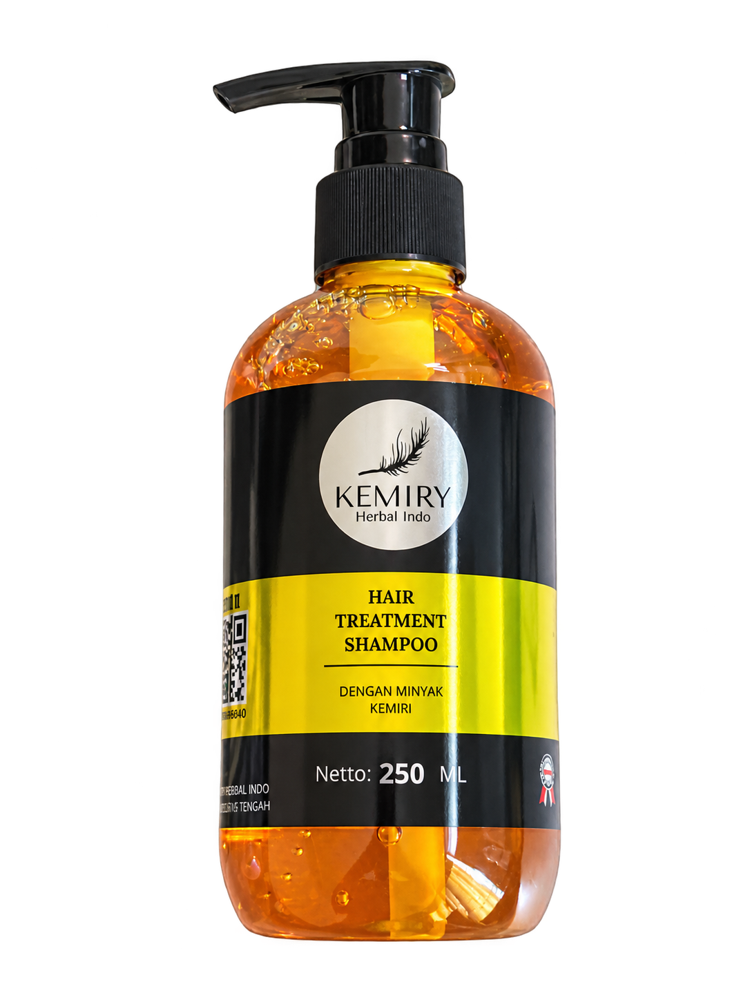

250 ml
SHAMPOO
Shampoo Rosemary
Pilihan shampoo rosemary untuk melengkapi rutinitas keramas Anda.
Ingin mulai merawat rambut, tapi bingung memilih produk dan tak sempat meracik sendiri?
Kenali perawatan rambut siap pakai dari Kemiry Organic. Mulai dari pilihan yang Anda pahami, untuk rutinitas yang lebih sederhana.



Kemiry Organic menghadirkan produk perawatan rambut untuk Anda yang ingin merawat diri tanpa repot menyiapkan racikan sendiri.
Sejak 2020, kami menjalankan usaha perawatan rambut dengan pilihan shampoo, hair serum, dan minyak kemiri. Kami membantu pelanggan mengenali pilihan produk sebelum memulai rutinitasnya.
Untuk diri sendiri maupun orang tua, mulailah dengan informasi yang jelas dan pilihan yang dipahami.
Lihat keluarga produk kami ↗Kemiri, kemiri bakar, dan rosemary.
Pilih berdasarkan informasi produk
dan kebutuhan rutinitas Anda.
Pilihan shampoo rosemary untuk melengkapi rutinitas keramas Anda.
Pada label: Rosemary oil + Kemiri oil. Kenali komposisi produk sebelum memilih.
Pada label: 100% Minyak Kemiri Murni. Praktis dalam kemasan pompa.

Pilihan minyak kemiri bakar dalam kemasan pompa 100 ml.

Shampoo dengan minyak kemiri dalam kemasan 250 ml.
Informasi mengikuti nama dan ukuran pada kemasan. Untuk harga, ketersediaan, dan petunjuk penggunaan, tanyakan kepada tim Kemiry.
Produk adalah awalnya.
Memahami pilihan Anda juga penting.
Ceritakan kebutuhan rutinitas Anda. Tim kami membantu menjelaskan perbedaan pilihan Kemiry.
Tanyakan ukuran, informasi kemasan, dan petunjuk pemakaian produk yang Anda pilih.
Hubungi tim untuk informasi harga dan stok terkini, bantuan pemesanan, atau persyaratan menjadi reseller.
Sampaikan produk yang ingin Anda kenali dan kebiasaan perawatan Anda.
Kenali informasi setiap varian dan tanyakan detail yang masih membuat ragu.
Ikuti petunjuk pada kemasan produk yang Anda pilih.
Kami memiliki dua pilihan shampoo 250 ml, dua pilihan hair serum 50 ml, dan Minyak Kemiri Bakar 100 ml. Lihat katalog untuk nama lengkap tiap produk.
Setiap produk berbeda. Label Hair Serum with Minyak Kemiri menyebut 100% Minyak Kemiri Murni. Hair Serum with Rosemary Oil menyebut Rosemary oil + Kemiri oil. Informasi satu varian tidak berlaku untuk seluruh produk.
Ikuti petunjuk pada kemasan. Hubungi tim Kemiry untuk informasi penggunaan per produk, harga, dan ketersediaan terbaru.
Ya. Tim membantu menjelaskan pilihan dan informasi produk, serta membantu proses pemesanan.
Ceritakan kebutuhan Anda. Mari mulai dari informasi yang jelas.